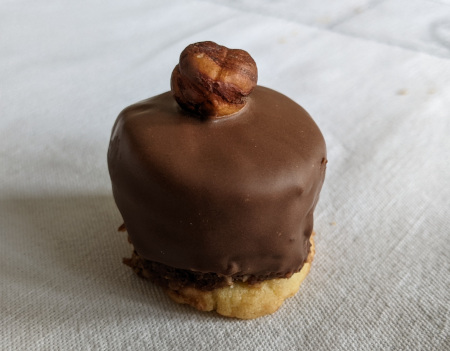

| Zutaten: | |
| 130 g | Mehl |
| 100 g | Butter | 305g | Zucker | 1 | Ei | 1.25 dl | Milch | Zimt | 1/2 | Vanillestengel | 150g | Kochschokolade | 140 g | geriebene Haselnüsse | 1 Beutel | ganze Haselnüsse |
Den Teig zubereiten:
Backofen auf 170°C vorheizen
Ei trennen, das Eigelb in eine Schüssel geben. Mit 35g Zucker und etwas Wasser verrühren.
70g Butter hinein rühren und mit dem gesiebten Mehl zu einem Teig verarbeiten.
Den Teig 0.5 cm dick auswallen und runde Scheibchen von 3-4 cm Durchmesser ausstechen. (Tipp: funktioniert gut mit den 4mm Betty Bossi Teighölzern.)
Bei 170°C 17 Minuten backen.
Füllung:
Die Milch mit wenig Zimt und einem Stückchen Vanillestengel aufkochen.
70 g Zucker zufügen.
1.5 Reihen einer 200g Tafel Kochschokolade abbrechen und in der Milch rührend schmelzen.
Die geriebenen Haselnüsse zugeben, alles gut verrühren.
Füllung auf eine Teigscheibe geben und ein zweites Teigstück darauf geben (wie beim Hamburger) und auskühlen lassen.
Glasur: (heikel, könnte durch Beutelglasur ersetzt werden)
200g Zucker mit 1.25 dl Wasser aufkochen. Solange kochen bis der Sirup im "Faden" vom Kochlöffel rinnt, wenn man diesen in die Höhe hebt. Das sieht dann so aus: vom Kochlöffel rinnt der Sirup in einem klebrigen Faden herunter, der dann am Ende ein kleines Kügelchen bildet, das wie an einem elastischen Band (dem Faden) hängt. Man kann dann auch einen Tropfen Sirup auf die Daumenkuppe tröpfeln (Achtung, ziemlich heiss), den Zeigefinger drauflegen und wieder entfernen und dann sollte sich ein Faden bilden. Die Schwierigkeit besteht bis zu diesem Zeitpunkt darin, dass bei zu wenig langem Kochen die Glasur nicht richtig fest wird und bei zu langem Kochen zerbröckelt.
Während man den Sirup zubereitet, muss man 100g Schokolade entweder im Wasserbad schmelzen, oder, was einfacher ist, sie nach Betty Bossi mit sehr heissem Wasser begiessen das man dann so gut als möglich abgiesst. Es macht nichts, wenn ein bisschen Wasser drin bleibt. Wenn die Schokolade weich ist, muss man sie eifrig glatt rühren, ein nussgrosses Stück Butter mitrühren (nicht gerade direkt aus dem Kühlschrank). Dann den kochend heissen Sirup rührend in die Schokolade hineingiessen. Das ist insofern schwierig, als sich beim Rühren natürlich vor allem die Schüssel mit der Schokolade dreht, anstatt dass sich die Massen zusammen rühren lassen. Also entweder man hat eine Hilfe, welche die Schokoladenschüssel festhält, oder man behilft sich, indem man unter die Schüssel einen nassen Fetzen legt, so bleibt dann die Schüssel mehr oder weniger ruhig beim Rühren.
Wenn alles schön glattgerührt ist, werden die gefüllten Kraperln hinein getaucht und sofort (bevor die Glasur trocknet) mit einer Haselnuss gekrönt. Man muss sehr rasch arbeiten, weil die Glasur rasch eindickt und trocknet. Man kann sie ein- bis zweimal mit wenig heissem Wasser verdünnen, wenn sie zu dick wird.
Meine Tante Ilse.
War immer das Highlight bei den Weihnachtsguetzli. RE 9.1.2010
Der Guss ist mir total misslungen. Ich hatte den Zuckersirup genau am richtigen Punkt. Dann habe ich die Schokolade dazu gegeben und das Wasser ist verpufft und ich hatte nur noch Schokoladenpulver. Das habe ich wieder verflüssigt und auf die Kraperln gegossen aber wie echt war das nicht mehr. RE 22.1.2010
Am 10.12.2022 zubereitet. Ging gut. Habe Schokoladenglasur verwendet. Am besten warm machen und in ein enges Gefäss geben. Danach die Kipferl darin tunken und die Haselnuss aufsetzen.
@LINKBACK_TAG@ @WAKELOCK@